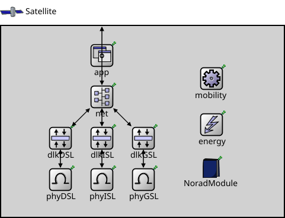

Package: Nodes._20_Satellite
Satellite
compound module(no description)

Usage diagram
The following diagram shows usage relationships between types. Unresolved types are missing from the diagram.
Inheritance diagram
The following diagram shows inheritance relationships for this type. Unresolved types are missing from the diagram.
Used in
| Name | Type | Description |
|---|---|---|
| Florasat | network | (no description) |
Extends
| Name | Type | Description |
|---|---|---|
| LayerForwarder | simple module | (no description) |
Parameters
| Name | Type | Default value | Description |
|---|---|---|---|
| layerName | string | "Satellite" | |
| upperLatitudeBound | double | 70.0 | |
| lowerLatitudeBound | double | -70.0 |
Properties
| Name | Value | Description |
|---|---|---|
| class | satellite::Sat | |
| display | p=695.185,549.115;i=satellit_blue |
Gates
| Name | Direction | Size | Description |
|---|---|---|---|
| upperIn | input | ||
| upperOut | output | ||
| lowerIn | input | ||
| lowerOut | output | ||
| leftIn | input |
ISL gates |
|
| leftOut | output | ||
| upIn | input | ||
| upOut | output | ||
| rightIn | input | ||
| rightOut | output | ||
| downIn | input | ||
| downOut | output | ||
| groundLinkIn [ ] | input | 40 | |
| groundLinkOut [ ] | output | 40 |
Unassigned submodule parameters
| Name | Type | Default value | Description |
|---|---|---|---|
| phyISL.leftIf.queue.displayStringTextFormat | string | "contains %p pk (%l) pushed %u\npulled %o removed %r dropped %d" |
determines the text that is written on top of the submodule |
| phyISL.leftIf.queue.packetCapacity | int | 100 |
maximum number of packets in the queue, no limit by default |
| phyISL.leftIf.queue.dataCapacity | int | -1b |
maximum total length of packets in the queue, no limit by default |
| phyISL.leftIf.queue.dropperClass | string | "inet::queueing::PacketAtCollectionEndDropper" |
determines which packets are dropped when the queue is overloaded, packets are not dropped by default; the parameter must be the name of a C++ class which implements the IPacketDropperFunction C++ interface and is registered via Register_Class |
| phyISL.leftIf.queue.comparatorClass | string | "" |
determines the order of packets in the queue, insertion order by default; the parameter must be the name of a C++ class which implements the IPacketComparatorFunction C++ interface and is registered via Register_Class |
| phyISL.leftIf.queue.bufferModule | string | "" |
relative module path to the IPacketBuffer module used by this queue, implicit buffer by default |
| phyISL.leftIf.islIf.displayStringTextFormat | string | "processed %p pk (%l) dropped %d" |
determines the text that is written on top of the submodule |
| phyISL.upIf.queue.displayStringTextFormat | string | "contains %p pk (%l) pushed %u\npulled %o removed %r dropped %d" |
determines the text that is written on top of the submodule |
| phyISL.upIf.queue.packetCapacity | int | 100 |
maximum number of packets in the queue, no limit by default |
| phyISL.upIf.queue.dataCapacity | int | -1b |
maximum total length of packets in the queue, no limit by default |
| phyISL.upIf.queue.dropperClass | string | "inet::queueing::PacketAtCollectionEndDropper" |
determines which packets are dropped when the queue is overloaded, packets are not dropped by default; the parameter must be the name of a C++ class which implements the IPacketDropperFunction C++ interface and is registered via Register_Class |
| phyISL.upIf.queue.comparatorClass | string | "" |
determines the order of packets in the queue, insertion order by default; the parameter must be the name of a C++ class which implements the IPacketComparatorFunction C++ interface and is registered via Register_Class |
| phyISL.upIf.queue.bufferModule | string | "" |
relative module path to the IPacketBuffer module used by this queue, implicit buffer by default |
| phyISL.upIf.islIf.displayStringTextFormat | string | "processed %p pk (%l) dropped %d" |
determines the text that is written on top of the submodule |
| phyISL.rightIf.queue.displayStringTextFormat | string | "contains %p pk (%l) pushed %u\npulled %o removed %r dropped %d" |
determines the text that is written on top of the submodule |
| phyISL.rightIf.queue.packetCapacity | int | 100 |
maximum number of packets in the queue, no limit by default |
| phyISL.rightIf.queue.dataCapacity | int | -1b |
maximum total length of packets in the queue, no limit by default |
| phyISL.rightIf.queue.dropperClass | string | "inet::queueing::PacketAtCollectionEndDropper" |
determines which packets are dropped when the queue is overloaded, packets are not dropped by default; the parameter must be the name of a C++ class which implements the IPacketDropperFunction C++ interface and is registered via Register_Class |
| phyISL.rightIf.queue.comparatorClass | string | "" |
determines the order of packets in the queue, insertion order by default; the parameter must be the name of a C++ class which implements the IPacketComparatorFunction C++ interface and is registered via Register_Class |
| phyISL.rightIf.queue.bufferModule | string | "" |
relative module path to the IPacketBuffer module used by this queue, implicit buffer by default |
| phyISL.rightIf.islIf.displayStringTextFormat | string | "processed %p pk (%l) dropped %d" |
determines the text that is written on top of the submodule |
| phyISL.downIf.queue.displayStringTextFormat | string | "contains %p pk (%l) pushed %u\npulled %o removed %r dropped %d" |
determines the text that is written on top of the submodule |
| phyISL.downIf.queue.packetCapacity | int | 100 |
maximum number of packets in the queue, no limit by default |
| phyISL.downIf.queue.dataCapacity | int | -1b |
maximum total length of packets in the queue, no limit by default |
| phyISL.downIf.queue.dropperClass | string | "inet::queueing::PacketAtCollectionEndDropper" |
determines which packets are dropped when the queue is overloaded, packets are not dropped by default; the parameter must be the name of a C++ class which implements the IPacketDropperFunction C++ interface and is registered via Register_Class |
| phyISL.downIf.queue.comparatorClass | string | "" |
determines the order of packets in the queue, insertion order by default; the parameter must be the name of a C++ class which implements the IPacketComparatorFunction C++ interface and is registered via Register_Class |
| phyISL.downIf.queue.bufferModule | string | "" |
relative module path to the IPacketBuffer module used by this queue, implicit buffer by default |
| phyISL.downIf.islIf.displayStringTextFormat | string | "processed %p pk (%l) dropped %d" |
determines the text that is written on top of the submodule |
| dlkISL.layerName | string | "Sat_Isl_Dlk" | |
| dlkGSL.layerName | string | "Sat_Gsl_Dlk" | |
| app.layerName | string | "Sat_App" | |
| mobility.subjectModule | string | "^" |
module path which determines the subject module, the motion of which this mobility model describes, the default value is the parent module |
| mobility.coordinateSystemModule | string | "" |
module path of the geographic coordinate system module |
| mobility.displayStringTextFormat | string | "p: %p\nv: %v" |
format string for the mobility module's display string text |
| mobility.updateDisplayString | bool | true |
enables continuous update of the subject module's position via modifying its display string |
| mobility.constraintAreaMinX | double | -inf m |
min x position of the constraint area, unconstrained by default (negative infinity) |
| mobility.constraintAreaMinY | double | -inf m |
min y position of the constraint area, unconstrained by default (negative infinity) |
| mobility.constraintAreaMinZ | double | -inf m |
min z position of the constraint area, unconstrained by default (negative infinity) |
| mobility.constraintAreaMaxX | double | inf m |
max x position of the constraint area, unconstrained by default (positive infinity) |
| mobility.constraintAreaMaxY | double | inf m |
max y position of the constraint area, unconstrained by default (positive infinity) |
| mobility.constraintAreaMaxZ | double | inf m |
max z position of the constraint area, unconstrained by default (positive infinity) |
| mobility.updateInterval | double | 0.1s |
the simulation time interval used to regularly signal mobility state changes and update the display |
| mobility.faceForward | bool | true | |
| mobility.displaySpanArea | bool | false |
bool faceForward = default(true); |
| mobility.effectiveSlant | int | 0 | |
| NoradModule.satIndex | int | ||
| NoradModule.satName | string | ||
| NoradModule.epochYear | int | 21 | |
| NoradModule.epochDay | double | 86.49033611 | |
| NoradModule.eccentricity | double | 0.0001698 | |
| NoradModule.inclination | double | 53 |
consistent between satellites |
| NoradModule.altitude | double | 550 |
consistent between satellites |
| NoradModule.meanAnomaly | double | 0 | |
| NoradModule.raan | double | 0 | |
| NoradModule.argPerigee | double | 0 | |
| NoradModule.bstar | double | 0.00042243 | |
| NoradModule.drag | double | 0.00001846 | |
| NoradModule.baseYear | int | 21 | |
| NoradModule.baseDay | double | 86.49033611 | |
| NoradModule.planes | int | 1 | |
| NoradModule.satPerPlane | int | 1 |
Source code
module Satellite extends LayerForwarder { parameters: @display("p=695.185,549.115;i=satellit_blue"); @class(satellite::Sat); layerName = default("Satellite"); //*.interfaceTableModule = default(absPath(".interfaceTable")); //*.net.nic.interfaceTableModule = default(absPath("^.interfaceTable")); // *.routingTableModule = default(routingTableType != "" ? absPath(".routingTable") : ""); // *.energySourceModule = default(exists(energyStorage) ? absPath(".energyStorage") : ""); double upperLatitudeBound = default(70.0); double lowerLatitudeBound = default(-70.0); gates: // ISL gates input leftIn; output leftOut; input upIn; output upOut; input rightIn; output rightOut; input downIn; output downOut; input groundLinkIn[40]; output groundLinkOut[40]; submodules: phyDSL: Sat_Dsl_Phy { @display("p=100,260"); } dlkDSL: Sat_Dsl_Dlk { @display("p=100,190"); } phyISL: Sat_Isl_Phy { @display("p=170,260"); } dlkISL: Sat_Isl_Dlk { @display("p=170,190"); } phyGSL: Sat_Gsl_Phy { @display("p=240,260"); } dlkGSL: Sat_Gsl_Dlk { @display("p=240,190"); } net: Sat_Net { @display("p=170,120"); //is=n } app: Sat_App { @display("p=170,50"); } energy: Sat_Ene { @display("p=355,167"); } mobility: Sat_Mob_SatelliteMobility { @display("p=355,89"); } NoradModule: Sat_Mob_NoradA { @display("p=354,241"); } connections allowunconnected: dlkDSL.lowerOut --> phyDSL.upperIn; phyDSL.upperOut --> dlkDSL.lowerIn; dlkISL.lowerOut --> phyISL.upperIn; phyISL.upperOut --> dlkISL.lowerIn; dlkGSL.lowerOut --> phyGSL.upperIn; phyGSL.upperOut --> dlkGSL.lowerIn; net.lowerOutDSL --> dlkDSL.upperIn; dlkDSL.upperOut --> net.lowerInDSL; net.lowerOutISL --> dlkISL.upperIn; dlkISL.upperOut --> net.lowerInISL; net.lowerOutGSL --> dlkGSL.upperIn; dlkGSL.upperOut --> net.lowerInGSL; ///app.lowerOut --> net.upperIn; ///net.upperOut --> app.lowerIn; for i=0..39 { net.groundLinkOut[i] --> groundLinkOut[i]; groundLinkIn[i] --> net.groundLinkIn[i]; } }File: src/Nodes/_20_Satellite/sat.ned
 This documentation is released under the Creative Commons license
This documentation is released under the Creative Commons license